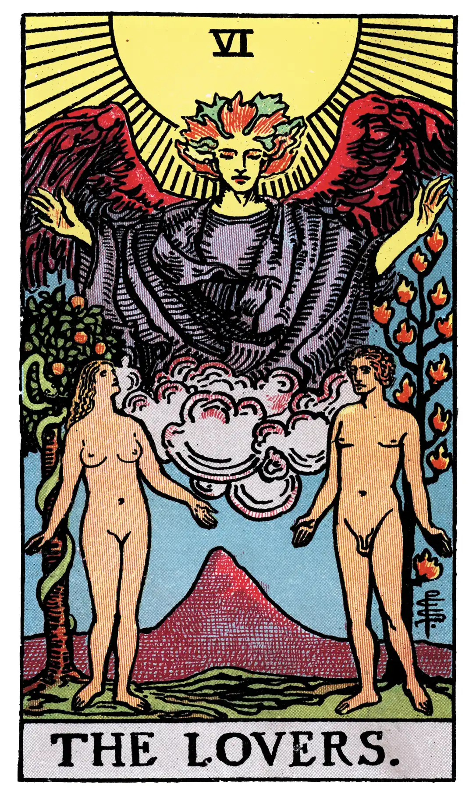

The Lovers

A.E.W.
Upright
Attraction, love, beauty, trials overcome.
Reversed
Failure, foolish designs. Another account speaks of marriage frustrated and contrarieties of all kinds.
S.L.M.M.
Upright
Wise Dispositions, Proof, Trials Surmounted
Reversed
Unwise Plans, Failure when put to the test.
Description
The sun shines in the zenith, and beneath is a great winged figure with arms extended, pouring down influences. In the foreground are two human figures, male and female, unveiled before each other, as if Adam and Eve when they first occupied the paradise of the earthly body. Behind the man is the Tree of Life, bearing twelve fruits, and the Tree of the Knowledge of Good and Evil is behind the woman; the serpent is twining round it. The figures suggest youth, virginity, innocence and love before it is contaminated by gross material desire. This is in all simplicity the card of human love, here exhibited as part of the way, the truth and the life. It replaces, by recourse to first principles, the old card of marriage, which I have described previously, and the later follies which depicted man between vice and virtue. In a very high sense, the card is a mystery of the Covenant and Sabbath.
The suggestion in respect of the woman is that she signifies that attraction towards the sensitive life which carries within it the idea of the Fall of Man, but she is rather the working of a Secret Law of Providence than a willing and conscious temptress. It is through her imputed lapse that man shall arise ultimately, and only by her can he complete himself. The card is therefore in its way another intimation concerning the great mystery of womanhood. The old meanings fall to pieces of necessity with the old pictures, but even as interpretations of the latter, some of them were of the order of commonplace and others were false in symbolism.
Additionally
The Lovers or Marriage. This symbol has undergone many variations, as might be expected from its subject. In the eighteenth century form, by which it first became known to the world of archaeological research, it is really a card of married life, shewing father and mother, with their child placed between them; and the pagan Cupid above, in the act of flying his shaft, is, of course, a misapplied emblem. The Cupid is of love beginning rather than of love in its fulness, guarding the fruit thereof. The card is said to have been entitled Simulacyum fidei, the symbol of conjugal faith, for which the rainbow as a sign of the covenant would have been a more appropriate concomitant. The figures are also held to have signified Truth, Honour and Love, but I suspect that this was, so to speak, the gloss of a commentator moralizing. It has these, but it has other and higher aspects.